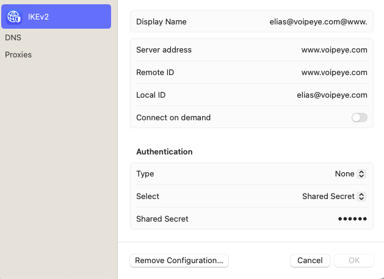

System Settings --> VPN --> Add VPN Configuration --> IKEV2
Display Name: Any
Server address: Server IP or domain name
Remote ID: Must be domain name if domain name is configured. Or it is the server IP address
Local ID: User name
Type: None
Select: Shared Secret
Shared Secret: The password
If it is a SAML user, then the password is the token generated from "Generate New Token for VPN Auth". The SAML token is a temp password, which will expire in 2 hours. If the token is less than 2 hours and the same OKTA or SAML account has another login, then the last token will be replaced with new generated token. That means it needs to refill "Shared Secret" after 2 hours or after another OKTA/SAML login.The existing VPN connection will not be disconnected until next VPN reconnection even if the token has been expired.
